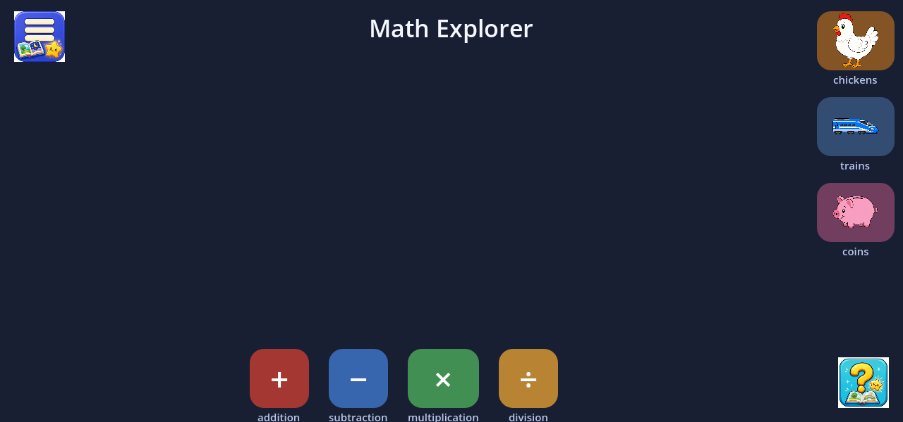
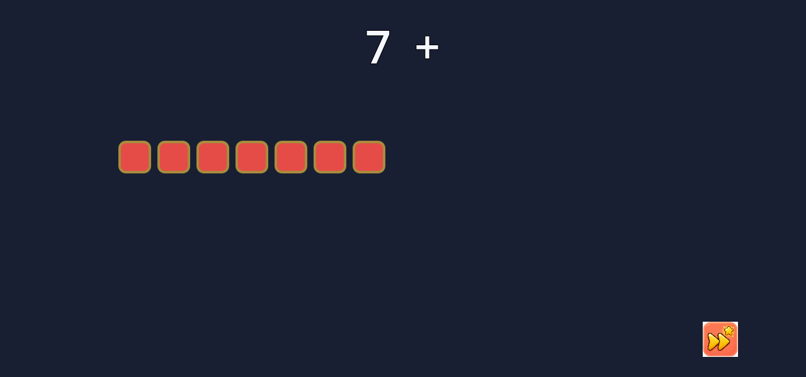
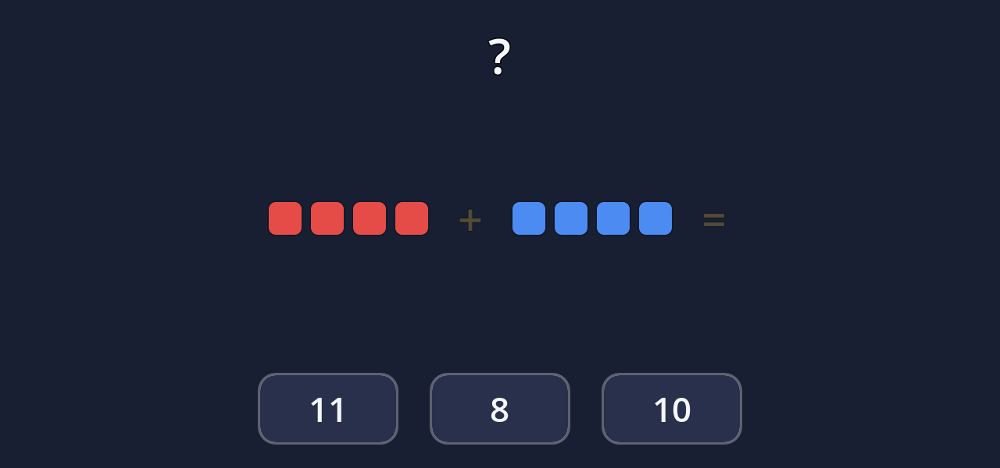
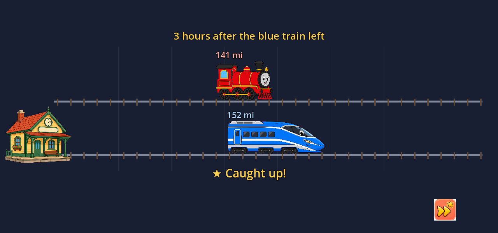
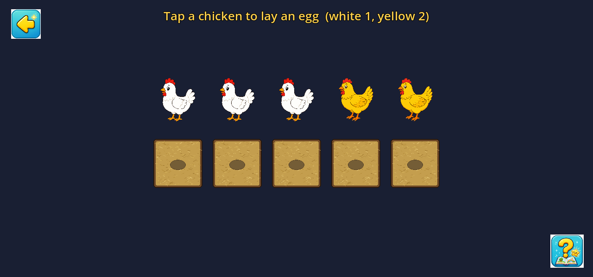

Game 4 · Star Learner
Math Explorer
Early math made visible: every number is a set of cubes you can count, every answer is narrated and animated, and a wrong guess is never just marked wrong — it is re-counted, slower. Built for one-finger landscape play on the Star Learner kiosk.
How it works
The north star is simple: numbers should be things, not symbols.
7 is seven red cubes you can point at; + is sliding two piles
together and counting on; × is equal groups; ÷ is sharing into
buckets. The equation builds on top of that picture, in sync with the voice, so the
abstract notation attaches to something she can see.
Home is a quiet launch pad: four rounded tabs along the bottom for +, −, ×, and ÷, and three story games stacked on the right — chickens & eggs, two trains, and the coin counter. Tap an operation and you get a card with a worked example, Watch the tutorial, and Practice. The first Practice tap on a tab plays its block tutorial first, so she is never dropped in cold.
Tutorials share one cube language everywhere: a bright gold ring means “counting now,” a dull ring means “already counted.” Addition counts on from seven; subtraction takes cubes away and counts what is left; multiplication counts equal groups; division deals cubes into buckets. Everything is spoken — tap to skip if she already knows the beat.
Practice uses the same manipulatives, but she picks the answer. A correct tap turns the cubes gold and moves on. A miss is coached: the engine re-counts slowly, highlights the missed cube, or replays the relevant tutorial beat — never a scold. Problems are procedurally generated, so the same idea shows up with fresh numbers.
The story games put the same arithmetic into scenes she can drag:
- Chickens & eggs — hens lay different daily counts; drag eggs into nests, then pack cartons that snap shut when full.
- Two trains — a slower steam engine leaves early; a faster blue train eats the gap, flashes “Caught up!”, and ends on a miles-ahead question.
- Coin counter — pennies, nickels, and dimes; drag coins to make the spoken target amount, with a running total.
The whole UI is spoken with warm baked narration (same voice family as the other Star Learner titles). Large touch targets, landscape 1280×600, one idea on screen at a time. On a Star Learner unit it ships as the math tile in the curated offline catalog — no store, no browser, no reading required to play.
Screenshots




